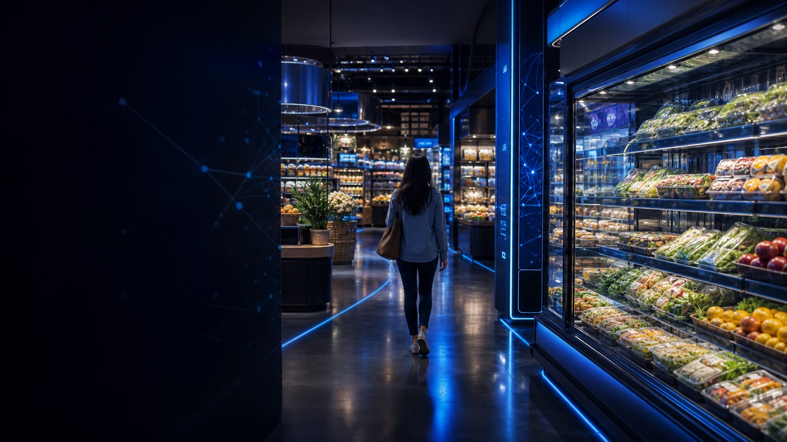
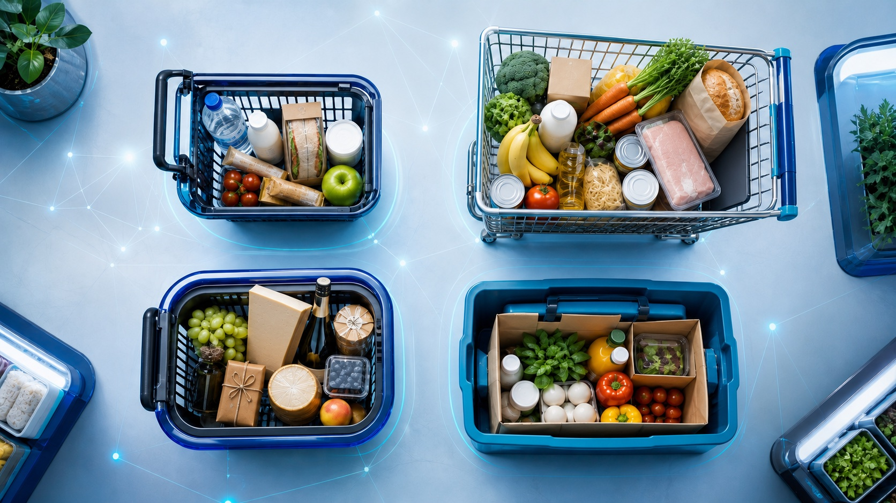

Shopper / CatMan / RGM · рабочая встреча ECR
Идеальный магазин будущего: от когорт до витрины
Будущее не выглядит как робот у полки. Оно выглядит как магазин, который перестал быть одинаковым для всех.

Футуристический интерьер и не коллекция технологий
Сенсоры, экраны и автоматы сами по себе не делают магазин релевантнее покупателю.
Система, которая умеет меняться под задачу покупателя
Она перестраивает ассортимент, навигацию, пространство, коммуникацию и канал — а затем проверяет решение измеримым пилотом.
Главное за 90 секунд
Четыре кейса сложились в одну операционную модель
Не четыре отдельные презентации, а четыре слоя одного адаптивного магазина.
Понять задачу → собрать решение → перенести его в нужную среду → измерить и изменить систему.
Магазин будущего возникает там, где аналитика покупателя действительно меняет полку, интерфейс, оборудование и правила масштабирования.
Обезличенный редакционный синтез завершённой встречизадача и контекст↔Результат
опыт и обратная связь
Интерактивная карта встречи
SEE → SHAPE → CONNECT → LEARN
Выберите слой. Это навигация по смыслу страницы, а не медиаплеер.
Начать не с магазина, а с покупательской задачи
Контекст точки, формат, территория и миссия покупки определяют, какое решение действительно будет полезно.

Показан слой SEE
Четыре кейса — одна система
Наблюдение → решение → как проверить
Защищённые источники заменены оригинальными диаграммами, но аналитическая логика сохранена.
Одинаковая сеть — разные задачи
Усреднённый магазин скрывает различия между покупательскими задачами.
Определить, для кого и в каком контексте проектируется изменение.
Больше выбора ≠ проще выбрать
Расширение полки может увеличить сложность, но не ценность выбора.
Собрать матрицу и навигацию вокруг сценария решения.
Одна механика не живёт во всех каналах
Время, пространство и внимание различаются между тремя средами.
Пересобрать контакт под естественный момент каждого пути.
Концепция ценна только после измерения
Аналитический инсайт сам по себе не меняет магазин.
Назначить владельца, критерий эффекта и ворота масштаба.
Агрегированное участие
Регистрация и присутствие — разные сигналы
Показываем только обезличенные агрегаты. Регистрационные записи не выдаются за фактическую посещаемость.
уникальных участников содержательной онлайн-части
Источник: официальный агрегированный отчёт онлайн-присутствия. Персональные данные исключены.
Воронка объединяет разные источники и не является прямой конверсией одной когорты. Фактический офлайн check-in не подтверждён и не моделируется.
Cross-case synthesis
Магазин будущего — это цикл, а не конечная картинка
Система видит изменение покупательской задачи, адаптирует решение и учится на измеренном результате.
Вход → адаптивный движок → опыт → обратная связь
Пять управляемых элементов меняются не по отдельности, а как единая гипотеза.
Пять вопросов: готов ли магазин к будущему?
Какую конкретную покупательскую задачу мы решаем?
Что должно адаптироваться под контекст точки?
Как решение меняется между кассой, самообслуживанием и digital?
Кто владеет пилотом и какой эффект считается успехом?
Какое правило определяет: масштабировать, изменить или остановить?
Что унесли с собой
Открытые вопросы рынка
Повестка для следующих пилотов — без закрытых атрибуций и неподтверждённых цифр.
Как считать совокупный финансовый эффект работы с покупательскими сегментами?
Как совместить единое предложение сети с адресной ассортиментной матрицей?
Как перенести импульсный выбор в digital без перегрузки интерфейса?
Кто финансирует перепроектирование и на каком горизонте оценивается пилот?
Какие данные и правила нужны для совместного управления покупательской задачей?